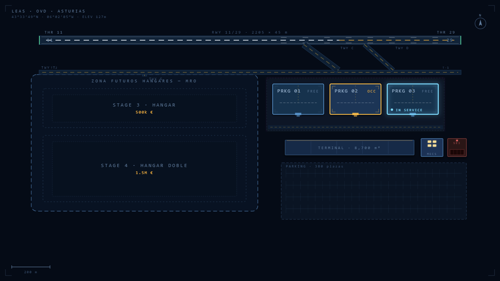
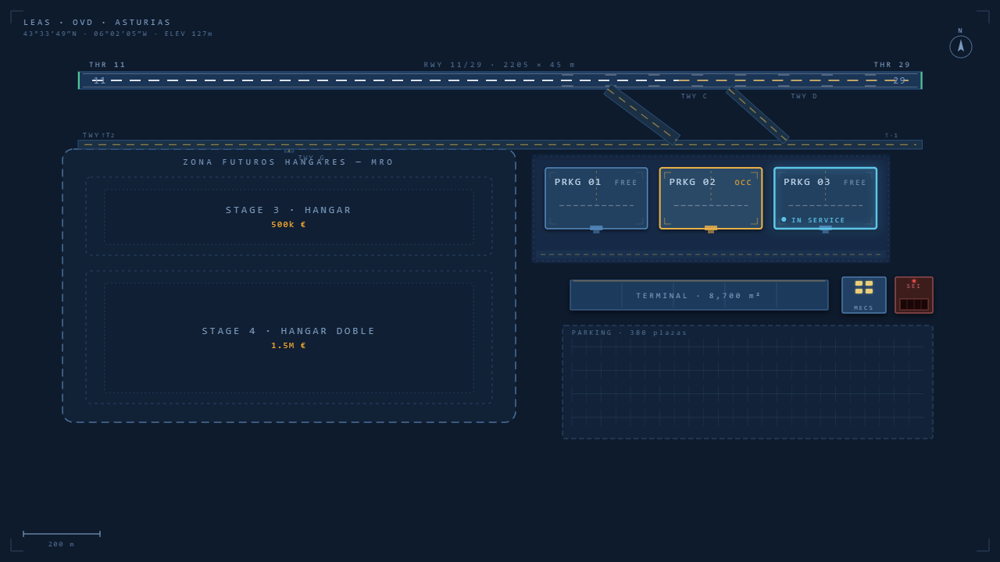

Cada Work Order es real
100 órdenes con capítulos ATA auténticos, referencias AMM y part numbers reales. No es flavor: el código las usa tal cual.
Project Hospital con aviones reales y el manual técnico EASA. Diriges un taller de mantenimiento aeronáutico independiente: aceptas contratos, fichas mecánicos certificados y resuelves cada Work Order como en la vida real. Cero 3D — pura sala de control.




100 órdenes con capítulos ATA auténticos, referencias AMM y part numbers reales. No es flavor: el código las usa tal cual.
Licencias B1/B2, type ratings CFM56 / V2500, moral, fatiga y turnos mañana/tarde/noche. Sin certifier, la WO no se cierra.
Aircraft On Ground. Penalty SLA ×5, no diferible, badge rojo pulsando. La mejor tensión del MRO real, modelada al detalle.
Sin victoria impuesta. Creces a tu ritmo… o quiebras: bancarrota o reputación cero y se acabó la partida.
No pilotas. No ves aviones aterrizar. Eres el director de un MRO — el taller que mantiene la flota — y tu emoción no es el espectáculo, es la decisión informada en el panel de asignación.
"Esta WO crítica entra a las 14:20. Tengo a Pedro libre, pero su rating B1 caduca en 3 semanas. ¿Le asigno, o me arriesgo a la penalización SLA?"
Sirves narrowbody A320/A321 a aerolíneas que generan trabajo real en tu plataforma. Aceptas o rechazas contratos según su BaseFee, su penalty y la reputación que pides. Fichas mecánicos certificados EASA Part-66, los asignas como certifier o helper, gestionas su moral y sus turnos. Construyes hangares cuando el balance lo aguanta. Y mantienes tu aprobación Part-145 a flote auditoría tras auditoría.
Todo se ve como una sala de control: paneles densos, listas, dashboards y un mapa esquemático del aeropuerto a escala real. Día y noche como eje de gameplay — la pernocta abre los daily checks, el A-check entra de madrugada. Cuando dominas el minuto a minuto, asciendes el nivel de abstracción y dejas que el jefe de turno asigne por ti.
Pensado para la intersección de dos nichos exigentes: el entusiasta de la aviación que reconoce un ATA chapter de un vistazo, y el tycoon hardcore que vive de dashboards y KPIs. Si te gustó Project Hospital, Production Line o Software Inc., esto te va a doler bien.
El feed de operaciones es el corazón del juego. WOs que progresan en tiempo real por sus 5 fases — Travel, T-shoot, Fix, Test, Release — cada una con su SLA corriendo.
El día llega lleno: llegadas, salidas, pernoctas. Los aviones contratados generan trabajo MRO; el resto son leads comerciales que puedes captar subiendo tu reputación.
No son peones. Cada técnico tiene su base B1/B2, sus type ratings, su eficiencia y su moral — que sube y baja según cómo lo trates. Cobertura 24h por turnos: si no hay nadie de noche, la noche va a 0.
Pista 11/29 a escala real, taxiways, apron y stands con código de aeropuerto. Los aviones son puntos luminosos; la furgo de mecánicos recorre las callecitas con giros de 90°. Estética CIC / mission control, no arcade.